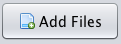
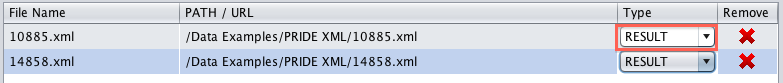

How to choose your files?
To choose the file, you can do so by clicking on the buttom below:
.
After added your files, the ProteomeXchange Submission Tool will automatically assign a file type. Due to the complexity of the proteomics field and numerous possible file formats, you should double-check whether these types are in fact correct.
You can change the file type by clicking the drop-down list highlighted below:
